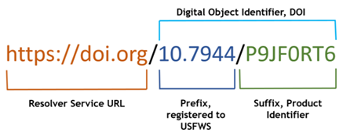
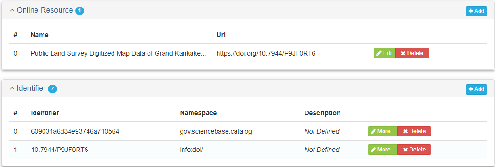
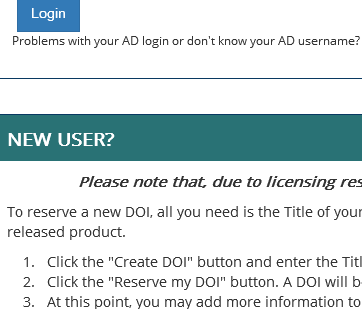
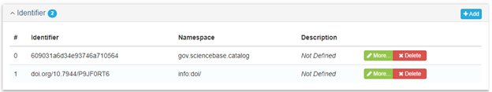
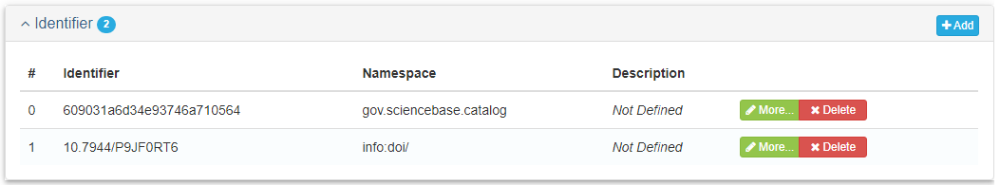
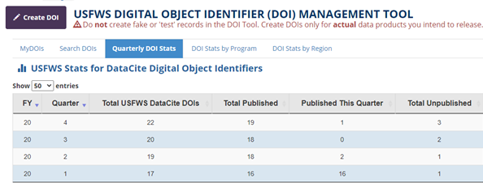
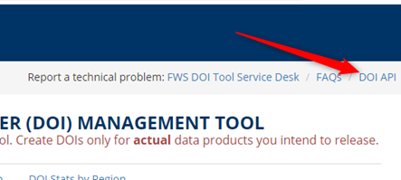

Digital Object Identifier (DOI)
A Digital Object Identifier (DOI) is a globally unique, persistent, and resolvable identifier used to uniquely identify objects and are widely used to identify academic, professional, and government information (e.g., journal articles, research reports, data sets, official publications). Think of it as a Social Security Number for your data. DOIs are standardized by the International Organization of Standards (ISO). DOIs are connected to the asset in perpetuity through a DOI hosting service (e.g., DataCite or CrossRef) that maintains the link to the resource.
DOIs should be assigned to Service-funded assets such as dataset, services, models, and reports, with the exception of research publications where journals assign the DOIs. Using DOIs promotes discovery and re-useability of the Service’s work and investments in data and ensures appropriate recognition for those collecting and properly managing data assets.
For more information on DOIs, see Digital Object Identifier Handbook.
The Service Digital Object Identifier Management Tool enables Service personnel to assign DOIs, registered with DataCite, to Service-funded data products and other resources. This tool is used to mint (create), update, publish, administer, and search for Service DOIs. DOI required metadata includes the asset title, creator(s), publication date, type of data product, abstract, dates relevant to the resource, and an online link to the permanent repository location of resource and can be updated at any time.

Figure 1 from Alaska Region Interim Data Management User Guide
Once minted, the DOI is included as an identifier in your metadata record (Figure 2)

This Tool was developed and is managed by the United States Geological Survey (USGS) Science Analytics and Synthesis (SAS) Science Data Management Branch, under an interagency agreement with the Service.
DOIs generated by this tool should be assigned to Service-funded data products (such as data releases, services, models, and reports), with the exception of primary research publications published in one of the Service’s journals which are assigned through a process governed by the National Conservation Training Center. To generate data product DOIs, you need to submit brief citation metadata, including the title, creator(s), publication date, type of data product, abstract, dates relevant to the data, and an online link to the data. These citation metadata can be updated at any time.
Before you being, collect required metadata information as follows:
| Metadata | Required? |
|---|---|
| Title | Required |
| Resource Type | Required |
| Point of Contact | Required |
| Date | Required |
| Abstract | Required |
| Repository URL | Required |
Creating and maintaining a DOI
The DOI Tool is designed to be user friendly and guide you through the process to mint, populate metadata, publish, and administer DOIs. It is important to note that there is both a “beta” and “live” version of the DOI. The beta version is useful as a training resource to become familiar with the DOI Tool.. The live version is where you go to actually create a DOI, which can be set to hidden or public. DOIs assigned through the live version have a prefix of 10.7944.
To login to the DOI Tool:
- Use your Service email address and password. Once logged in, you will have “read-only” access to any record, “write” access to records that you created and to those where you have been added as a “Manager”.
Minting a DOI
Minting a DOI creates and reserves a DOI and DOI URL and does NOT require fully populated metadata fields. The benefit to minting the DOI early, such as in the Planning or Access Phase of the data lifecycle is efficiency. The DOI can be referencing in related documentation, metadata, and other elements of the project, reducing the need for updating later.
To mint a DOI, follow these steps:
- Enter our existing metadata into the DOI Tool following the instructions provided on the site. New users are encouraged to review the “NEW USER?” section in the login page (Figure 1). The DOI does not need to be published publicly until the DOI metadata is completed.

The DOI is comprised of the resolvable service url, the registered prefix and a product identifier suffix (Figure 2). Service DOI are assigned the prefix of 10.7964. The DOI URL can be used as a weblink to the registered asset.
Once created, the DOI is ready for use asset related metadata, reports, publications, and other elements that need to refer to DOIs as soon as necessary.
During the maintain phase of the data lifecycle, any empty fields in the DOI metadata should be updated.
Once the fields in the DOI metadata are fully populated, publish the DOI. This creates the digital tether to the URL for the data resource landing page.
You can administer the DOI at any time using the DOI tools dashboard(s). See the DOI Administration section below for more information.
Include the DOI as an identifier in your metadata record (Figure 2b). As an identifier, only the prefix and suffix are needed.
Include the DOI as an online resource in your metadata record (Figure 2c). In this case the entire DOI url is needed.



DOI Administration
The Service has secured a large, yet limited bank (range) of DOIs. Once minted, the DOI is valid in perpetuity. If you are new to the DOI, please get familiar with the tool in the training beta version. When ready to officially reserve a DOI, use the live version of the tool. The DOI tool was not intended to be used do not for data assets that were not initiated, funded, or delivered as part of a Service project.
To date the Service has not identified a responsible party or governance for administering DOIs within the Service. As a result, the duties of DOI administration must fall to the collective of Service DOI creators/editors. DOI administration duties include:
Ensuring minted DOIs are being used for their intended purpose, which includes:
- Minimizing the number of DOIs being minted and never published,
- Ensuring one DOI per digital object (e.g. research reports, data sets, service, etc.)
- Ensuring URL paths are still resolvable (no broken web links attached to the DOI)
- Providing usage reports
- Helping to reconcile previous DOIs from other DOI services
- Enhancing supplemental DOI metadata
Each Service program, currently without enterprise level governance, has the option to administer the assignment of DOIs to their data assets within their program such that it meets their workflow. While the tool is available for any Service employee to login and create a DOI, a program may prefer to have a process to trigger a review or notification before a DOI is created. For example, an employee may login and create a DOI during planning set the DOI to hidden until the data and set edit rights to other accountable data staff. Once completed and approved, the DOI status can be set to public.

Bulk DOI Creation and Updates API
This tool also has an optional Web API (application programming interface) component for the automated creation and editing of DOIs and may be useful for bulk creation of DOIs through scripting/programming. After logging into the tool with your Department of Interior Active Directory credentials, see the DOI API link for more information.
